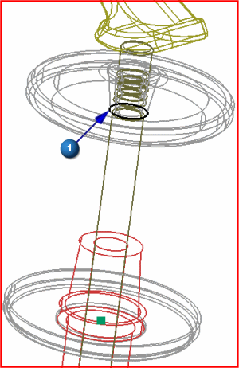
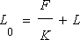

创建弹簧

 静态线框(视图工具条→渲染样式下拉菜单)
静态线框(视图工具条→渲染样式下拉菜单)

 弹簧(运动工具条→连接器下拉菜单)
弹簧(运动工具条→连接器下拉菜单)
-
附着
连杆

-
类型过滤器
边
提示
类型过滤器
 位于工具条区域的选择条上。
位于工具条区域的选择条上。 -


这个选项也将自动判断这一侧弹簧的原点。
-
基本
-
 选择连杆
选择连杆 -
类型过滤器
边
-

-
弹簧参数
-
注意显示的自由长度，在您定义弹簧的附着点之后，自由长度将自动更新为1.64英寸，在这一步，这是根据您定义的附着点计算的弹簧的安装长度，当前没有拉力或压力作用于弹簧上。
-
刚度
-
值
0.8
这是弹簧的劲度系数。
下一步，您将添加一个预载以压缩弹簧，这样就能使节气门顶住摇杆。
-
预载
0.2
注释
在这个示例中，我们知道预载的大小，再加上刚度，就可以完全定义弹簧。在某些情况下，您可能也需要通过指定预载长度来调整弹簧特性。
-
Tab 键
注意到自由长度值已经更新为1.89英寸，无论何时您更改预载、预载长度或者刚度的值，软件都将使用下面的公式来自动更新长度：

其中：
L0 = 自由长度
F = 长度为L时的预载
L = 预载长度
K = 刚度
-
确定